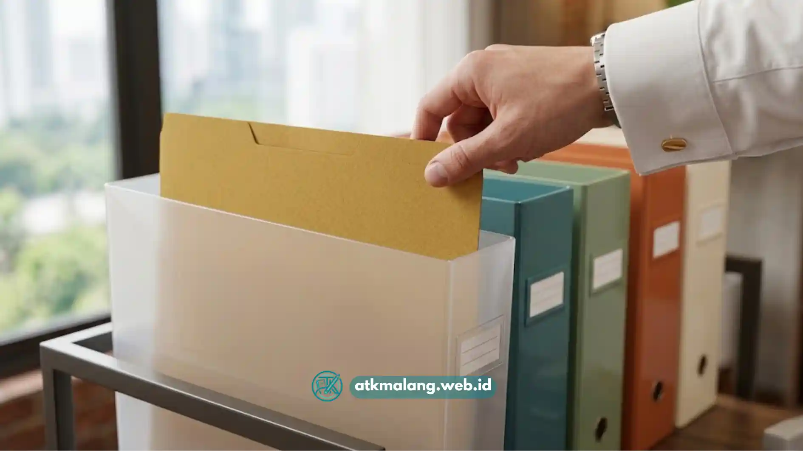

Meja kerja yang penuh tumpukan kertas sering membuat dokumen penting sulit ditemukan saat dibutuhkan.
Box file plastik menjadi salah satu solusi paling praktis untuk merapikan dokumen karena sifatnya yang ringan, tahan air, dan mudah disusun secara vertikal maupun horizontal di rak atau meja kerja.
Penggunaan Alat Tulis Kantor yang tepat sangat membantu memisahkan dokumen berdasarkan kategori atau proyek. Bahan plastik lebih tahan terhadap kelembapan dibanding kotak berbahan karton.
- Box file plastik membantu memisahkan dokumen berdasarkan kategori atau proyek.
- Sistem labeling yang konsisten mempercepat proses pencarian dokumen.
- Penataan box file sebaiknya disesuaikan dengan frekuensi penggunaan dokumen.
- Perawatan rutin membuat box file plastik tetap awet digunakan dalam jangka panjang.
Daftar Isi
- Apa Itu Box File dan Fungsinya di Lingkungan Kerja
- Mengapa Box File Plastik Menjadi Pilihan Populer
- Bagaimana Cara Memulai Sistem Organisasi Dokumen
- Apa Saja Manfaat Menggunakan Box File untuk Kantor
- Faktor yang Perlu Diperhatikan Saat Memilih Box File
- Apa Kesalahan Umum Saat Menggunakan Box File
- Bagaimana Cara Merawat Box File Plastik
Apa Itu Box File dan Fungsinya di Lingkungan Kerja
Box file adalah wadah berbentuk kotak dengan bukaan di bagian atas atau samping yang dirancang khusus untuk menyimpan kertas, map, dan dokumen dalam posisi berdiri.
Fungsi utamanya adalah menjaga dokumen tetap tersusun rapi, terlindungi dari debu, dan mudah diambil tanpa harus membongkar tumpukan kertas lain. Sebagai perlengkapan Alat Tulis Kantor esensial, box ini sangat membantu.
Di lingkungan kantor, box file biasanya digunakan untuk menyimpan berkas administrasi, laporan bulanan, kontrak kerja sama, hingga dokumen keuangan. Bentuknya yang seragam membuat penyimpanan terlihat tertata.
Mengapa Box File Plastik Menjadi Pilihan Populer
Dibandingkan bahan lain seperti karton atau kayu, plastik dianggap lebih praktis karena bobotnya ringan namun tetap kokoh menahan tumpukan kertas dalam jumlah cukup banyak.
Permukaannya juga lebih mudah dibersihkan bila terkena debu atau noda ringan, sehingga cocok digunakan dalam jangka panjang di lingkungan kerja yang sibuk untuk menjaga kualitas Alat Tulis Kantor.
Selain itu, box file plastik umumnya tersedia dalam berbagai warna, sehingga bisa dimanfaatkan sebagai kode warna untuk memisahkan kategori dokumen tertentu, seperti warna biru untuk keuangan.
Bagaimana Cara Memulai Sistem Organisasi Dokumen dengan Box File
Sebelum menata dokumen, langkah pertama yang perlu dilakukan adalah memilah berdasarkan kategori, misalnya jenis pekerjaan, tanggal, atau tingkat kepentingan.
Pemilahan awal ini menentukan jumlah box file yang dibutuhkan dan bagaimana sistem labelnya nanti agar pengelolaan Alat Tulis Kantor lebih terarah.
Dokumen yang sering diakses sebaiknya ditempatkan pada box file yang paling mudah dijangkau, sementara arsip lama bisa diletakkan di rak yang lebih tinggi.

Langkah praktis menyusun dan menata berkas penting dengan box file agar tidak berantakan.Langkah Praktis Menata Dokumen ke Dalam Box File
- Kelompokkan dokumen berdasarkan kategori atau nama proyek.
- Gunakan map atau folder tipis di dalam box file agar dokumen tidak mudah tercecer.
- Beri label yang jelas pada setiap box file, baik di bagian depan maupun samping.
- Susun box file berdasarkan urutan abjad, tanggal, atau prioritas penggunaan.
- Sisakan sedikit ruang kosong di setiap box agar dokumen mudah diambil tanpa menekan tumpukan.
Apa Saja Manfaat Menggunakan Box File untuk Dokumen Kantor
Penggunaan box file memberikan sejumlah manfaat langsung dalam aktivitas kerja, terutama dalam hal efisiensi waktu dan kerapian ruang kerja.
Manfaat yang paling terasa adalah berkurangnya waktu mencari dokumen di antara tumpukan kertas. Selain itu, dokumen lebih terlindungi dari risiko rusak karena tercampur barang lain yang bukan merupakan Alat Tulis Kantor.
Dari sisi tampilan, meja kerja yang tertata memberikan kesan lebih profesional untuk keperluan internal maupun ketika ada klien berkunjung.
Apa Saja Faktor yang Perlu Diperhatikan Saat Memilih Box File Plastik
Memilih box file yang tepat tidak hanya soal ukuran, tetapi juga mempertimbangkan ketahanan bahan, kapasitas penyimpanan, dan kemudahan akses.
Ketebalan plastik sangat penting, karena plastik terlalu tipis mudah retak. Kapasitas disesuaikan jenis dokumen agar kertas A4 tidak terlipat dalam pengarsipan Alat Tulis Kantor.
Faktor lain adalah kemudahan membuka dan menutup box file, model tutup satu tangan biasanya lebih praktis dibandingkan model pembongkaran rumit.
Apa Kesalahan Umum yang Sering Terjadi Saat Menggunakan Box File
Salah satu kesalahan paling sering adalah tidak konsisten dalam sistem pelabelan, sehingga box file yang seharusnya mempermudah pencarian justru membuat bingung.
Kesalahan lain adalah memasukkan terlalu banyak dokumen hingga melebihi kapasitas idealnya, membuat dokumen sulit diambil dan berisiko rusak karena tertekan.
Jarang melakukan evaluasi ulang terhadap sistem penyimpanan juga sering terjadi. Padahal, seiring bertambahnya dokumen baru, susunan Alat Tulis Kantor perlu disesuaikan.
Bagaimana Cara Merawat Box File Plastik agar Tetap Awet
Perawatan box file plastik cukup sederhana, bersihkan permukaan secara berkala dengan lap kering atau lembap mencegah debu masuk ke sela dokumen.
Hindari menumpuk box terlalu tinggi tanpa penyangga, karena tekanan berlebih pada bagian bawah dapat menyebabkan plastik retak seiring waktu.
Menyimpan di area yang tidak terkena paparan sinar matahari langsung menjaga warna dan kekuatan bahan plastik lebih lama.
Mengorganisir dokumen dengan box file plastik efektif menjaga kerapian meja kerja dan mempercepat pencarian berkas. Kuncinya pada konsistensi memilah dokumen dan memberi label.
Dengan pemilihan Alat Tulis Kantor yang sesuai kebutuhan dan perawatan tepat, dokumen kantor lebih terjaga, mudah diakses, dan tahan lama.